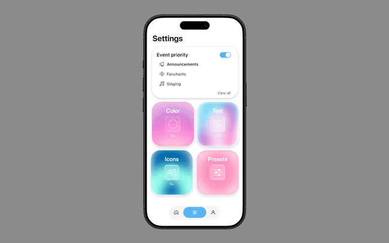
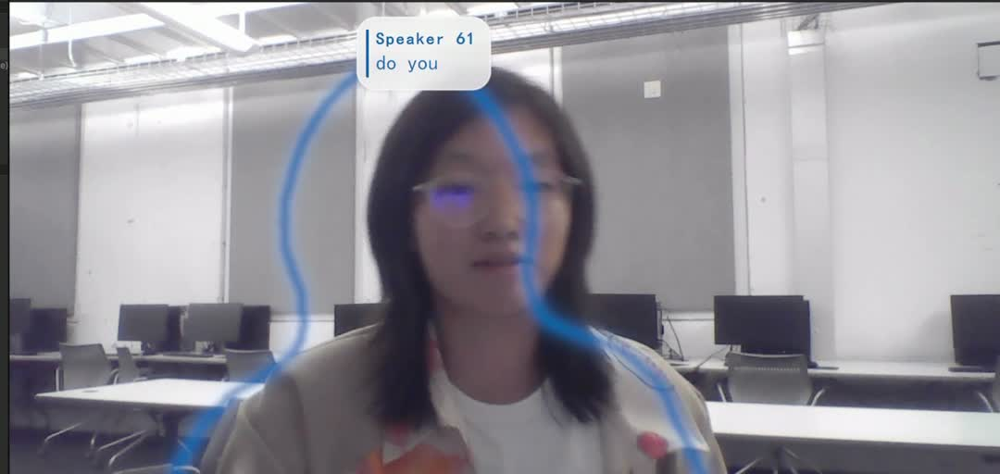

HEIMA
Beyond Hearing
AI-powered AR eyewear for Deaf and hard-of-hearing audiences. See who’s speaking, catch the invitation and join in on your own terms.

Vivian Peng & Zhaolin Hu
2026
Research, AR interaction, companion app, AI system design
Three AI models. One working prototype.
In our Applied AI class, we connected three models to Unity and demonstrated speaker-linked captions, sound-event and direction cues, tone cues and an invitation-triggered countdown. The recording documents individual prototype behaviors.
Paraformer
Speech → captionsTurns spoken words into readable text.
YAMNet
Sound → eventIdentifies sounds such as applause, laughter and alarms.
emotion2vec
Voice → toneEstimates emotional tone from speech.
In the Unity demo, we explored how these signals could appear in view: a caption beside a speaker, a cue for a sound outside the field of view, and a tone indicator during conversation.
It started with a Rihanna performance.
A clip of a sign-language interpreter at a Rihanna performance caught Vivian’s attention. Fans were sharing the interpreter’s expressive performance. It sparked our first question: what else makes it possible to take part in a live event?
The applause starts.
A few people clap together.
The fan sees hands moving.
Watching the crowd supplies context, a moment later.
The room goes quiet.
By the time the fan understands, the chance to join may have passed.
Every overlay asks someone to look away.
I proposed taking our concert journey into a conference reception. In both places, speakers change and conversations open up. Immersion meant staying with those people. That observation shaped which product direction we chose.
Visualize the concert
Translate music and stage activity into visual effects. More layers would also compete with the faces and performance people came to see.
Make participation visible
Highlight the speaker, locate a chant or show a timed invitation. These social moments recur at concerts, in theaters and at conference receptions.
Let people keep looking up.
We considered phones, VR and AR. A lightweight pair of glasses could keep the real venue in view and deliver guidance without asking the wearer to find a phone or switch modes. For me, immersion meant staying with the people already there.
What earns a place in the wearer’s view?
I led secondary research and reviewed captioning glasses with Vivian. Captions carry words, but reading also takes time and attention. We used the information a wearer needs next to choose the form of each cue.
The crowd starts clapping.
A border catches attention. A label or icon identifies the activity.
Our research notes described border alerts for urgent sounds. We adapted that placement because a short burst of applause also has a narrow window for joining.
A chant starts to the left.
Light the edge nearest the sound.
The wearer can locate an off-screen group with a glance, then decide whether to turn toward it.
The next talk moves to Room 2.
Show the words of the announcement.
Direction alone cannot communicate the new room. The exact message matters here.
Our journey map records the team’s design reasoning. Testing with DHH audiences is a next step.
Explore the original research workspace ↗A cheer comes from behind you.
At a conference reception, you’re facing the person you came to meet. A group behind you starts cheering. Which way do you look?

Now the venue announces a room change. If both cues compete for space, which one gets through?

One card, two ways to change the text.
Before the doors open, a wearer can adjust the captions once, then put the phone away. I kept the quick switch and the detailed controls on the same card.



On the way out, another fan says hello.
The person beside you starts talking as the crowd disperses. In this prototype, the glasses pair a caption with the person speaking. A small tone cue adds context to their words.

We designed for both moments: joining a crowd and following one person. The system map shows how each gets a different cue.

Can the wearer join in time?
The project ended with our classroom demonstration. My next question is whether wearers who want to participate can catch the moment. I would record when applause begins, when the cue appears and when the wearer joins. If they choose to watch, I would ask what they noticed.
Applause begins.
Record the start of the shared moment.
The border appears.
T₁ − T₀ gives the delay before the prompt.
The wearer joins.
If they choose to clap, T₂ − T₀ measures time to participation.